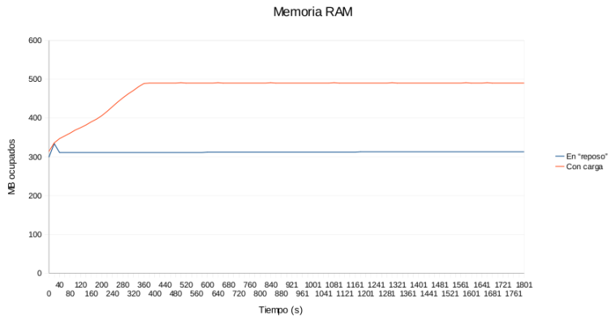
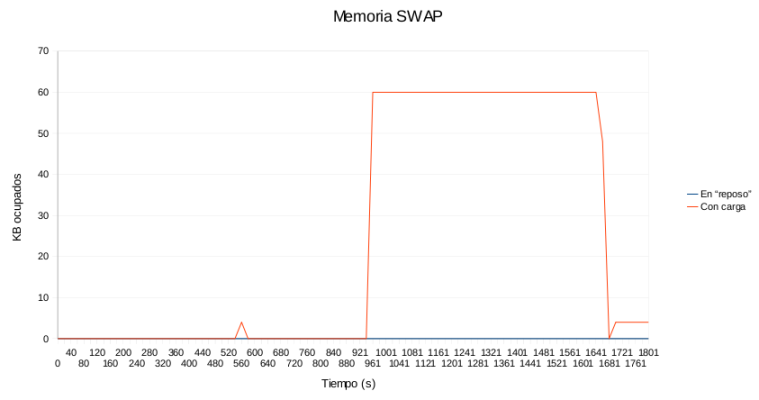
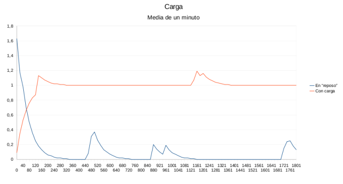
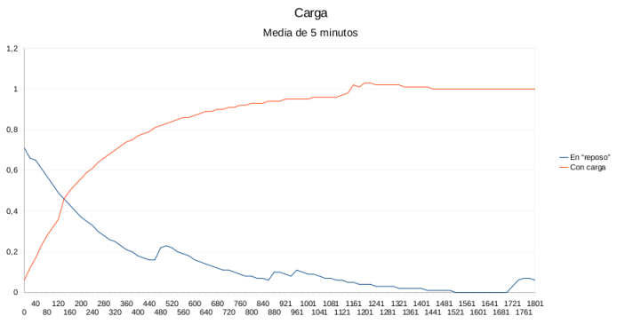
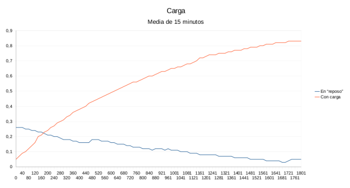

El objetivo de la práctica que he realizado es ver como el sistema se comporta a un uso intensivo de CPU y memoria, para ello voy a tomar mediciones cada x segundos de los valores de RAM/SWAP ocupados y de la carga media de la CPU (en 1, 5 y 15 minutos) tanto con el sistema en estado base como realizando una tarea (o carga). La tarea elegida se trata de la codificación de un video del formato XviD a VCD mediante el programa ffmpeg.
Para facilitarme obtener los datos he escrito un script para Bash que escribe en la salida estándar la información. Los valores correspondientes a la memoria los obtengo del fichero /proc/meminfo que me proporciona el kernel y los correspondientes a la carga mediante uptime. Los valores son mostrados totalmente ordenados y tabulados, haciendo de esta forma fácil la inserción en un programa de hojas de cálculo para realizar diversos análisis y gráficos.
Inicialmente el script muestra datos sobre el sistema, más adelante muestra durante 30 minutos los valores del sistema sin carga, los valores son mostrados cada 20 segundos. Después el programa ejecuta el programa de conversión de video y realiza exactamente lo mismo que antes, para después de los 30 minutos matar el proceso (me he asegurado que la ejecución dure más de este tiempo).
El código del script es el siguiente:
#!/bin/bash TMP=`cat /proc/meminfo |grep MemTotal` TMP=${TMP%' '*B} TOTALMEM=${TMP##M*' '} TIMEZERO=`date +%s` SLEEPTIME=20 TESTTIME=1800 function printheader() { echo $'RAM Ocupada\tSWAP Ocupada\tCarga\t\t\tTiempo' echo $'-----------\t------------\t-----\t\t\t------' } function printinfo() { TMP=`cat /proc/meminfo |grep SwapCached` TMP=${TMP%' '*B} SWAP=${TMP##S*' '} TMP=`cat /proc/meminfo |grep MemFree` TMP=${TMP%' '*B} TMP=${TMP##M*' '} let MEM=$TOTALMEM-$TMP TMP=`uptime|cut -f12- -d" "` LOAD=${TMP//', '/$'\t'} let TIME=`date +%s`-$TIMEZERO echo $MEM$'\t\t'$SWAP$'\t\t'$LOAD$'\t\t'$TIME } echo "Sistema" echo "=======" TMP=`cat /proc/cpuinfo |grep "model name"` echo ${TMP#m*:} cat /proc/meminfo |grep MemTotal cat /proc/meminfo |grep SwapTotal ffmpeg -version w echo echo "Estado actual" echo "=============" printheader printinfo echo echo "Fichero" echo "=======" file video.avi ls -l video.avi echo echo "La informacion sera mostrada cada "$SLEEPTIME" segundo(s)." echo "Ambos test duraran "$TESTTIME" segundos." echo echo "Test con el ordenador en el estado \"base\"" echo "====" printheader TIMEZERO=`date +%s` COUNT=0 until [ $COUNT -gt $TESTTIME ]; do printinfo let COUNT=$COUNT+$SLEEPTIME sleep $SLEEPTIME done echo echo "Test ejecutando 'ffmpeg -i video.avi -target pal-vcd video.mpg 2> /dev/null&'..." echo "====" printheader ffmpeg -i video.avi -target pal-vcd video.mpg 2> /dev/null& TIMEZERO=`date +%s` COUNT=0 until [ $COUNT -gt $TESTTIME ]; do printinfo let COUNT=$COUNT+$SLEEPTIME sleep $SLEEPTIME done killall ffmpeg echo echo "Finalizado" echo "=========="
En este fichero podemos ver la salida que abajo paso a analizar.
En la máquina en la que se realiza el análisis se está ejecutando Gnome entre otros programas propios del sistema, sin embargo, se deja que el script trabaje y ningún usuario realiza ninguna tarea durante ese tiempo.
 En la gráfica superior se puede observar como en el caso base el sistema no "consume" memoria RAM, en todo caso libera, ya que el sistema está recien arrancado y libera memoria de algunos programas que después del arranque no son útiles.
Sin embargo, con carga, el sistema va consumiendo la RAM hasta estabilizarse a aproximadamente 500MB. Esto puede ser porque el sistema comienza a intercambiar en SWAP (recordemos que trabajamos con 496MB de RAM). Pasemos a ver la SWAP:
 Vemos que el sistema no ha necesitado apenas intercambiar en SWAP, luego descartamos la hipótesis anterior. Aquí pueden ocurrir dos cosas; el programa detecta la RAM de que disponemos y evita que se tenga que intercambiar a SWAP controlando continuamente la memoria que va utilizando (algo que dispara el consumo de CPU) o bien que se dé la casualidad de que el programa no necesita más RAM justo en el momento en que esta llena (vaya casualidad).
Analizando el consumo de CPU me inclino más por la primera opción.
 Aquí vemos como en el sistema en reposo el valor es mínimo, salvo al comienzo, normal debido al arranque (podemos observar que conforme avanza el tiempo disminuye), y pequeños picos que se pueden deber a tareas administrativas y automáticas del sistema.
Con el sistema con carga vemos como la media aumenta paulatinamenta hasta estabilizarse en 1. Los picos que da la gráfica por encima de 1 se deben a que hay muchos procesos en la cola de espera en la CPU (sobrecarga!!!).
 Ocurre practicamente lo mismo que en el caso anterior; en el caso base la media tiende a ser 0, mientras que en el caso con carga se estabiliza en 1.
 Lo mismo que en los casos anteriores, salvo que no le da tiempo a llegar a 1 en el caso con carga.
Observando los datos, podemos ver que entorno a los segundos 160 y 1200 se produce sobrecarga en la CPU, esto significa que hay muchos procesos esperando para entrar en la CPU y esto nos hace afirmar que el equipo actual necesitaria una CPU mayor para este tipo de tareas.
No obstante, también vemos que casi todo el tiempo durante el análisis se está a punto de saturar la RAM, por lo que tambien se hace patente la necesidad de mayor capacidad RAM del sistema.